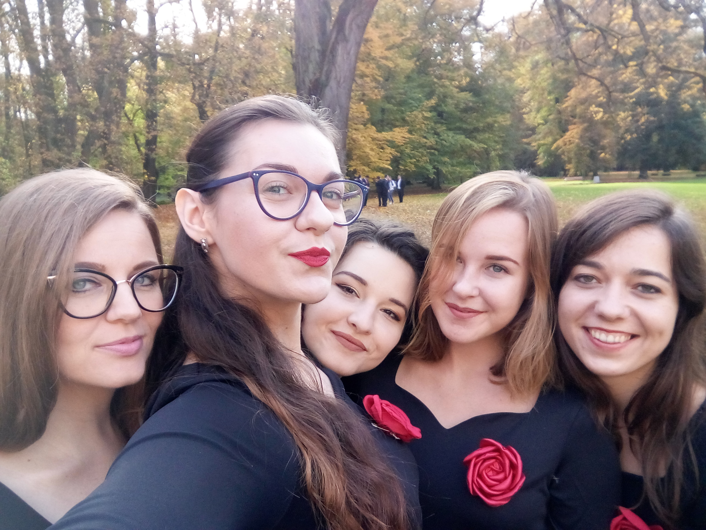
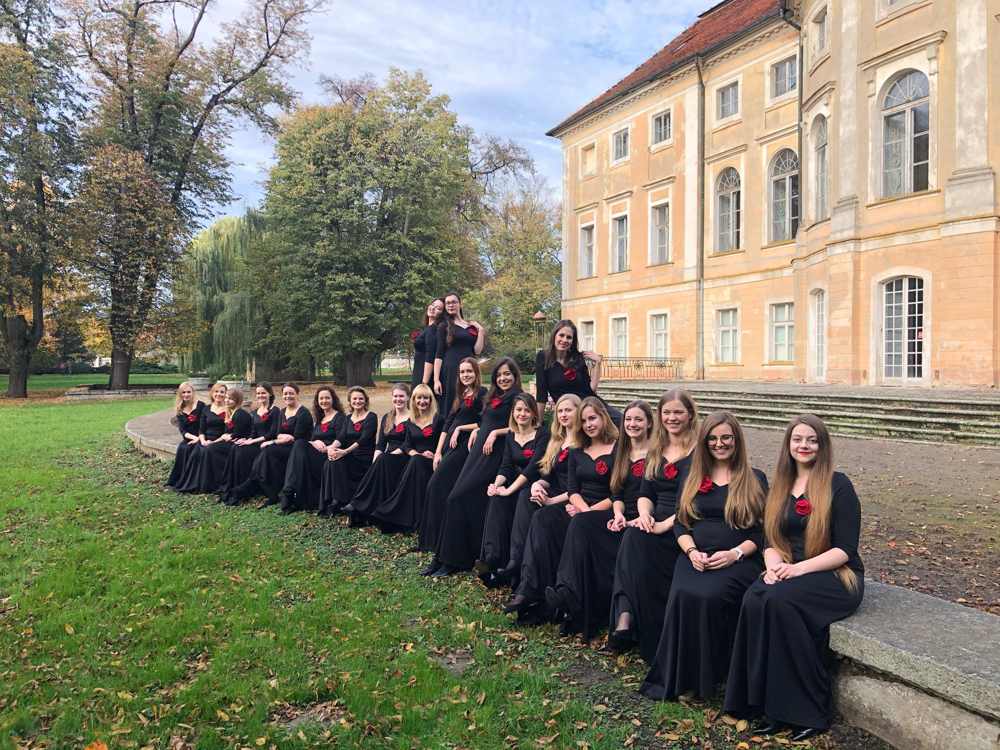

Dziewczyny z chóru kameralnego

Chór Kameralny Uniwersytetu im. Adama Mickiewicza w Poznaniu pod dyrekcją prof. Krzysztofa Szydzisza i dr Joanny Piech-Sławeckiej właśnie wyśpiewał sobie 25 lat. Zespół jednoczy wokół wokalnej pasji nie tylko studentów UAM – otwarty jest dla wszystkich, którzy cenią sztukę chóralną, chcą rozwijać swoje umiejętności i są wrażliwi na piękno.
Siłą zespołu jest jego niezwykła różnorodność – chór wykonuje muzykę wszystkich epok; utwory a cappella oraz wokalno-instrumentalne. Śpiewa w kilkunastu językach, nieustannie jednak popularyzuje muzykę polską. Dwukrotnie zdobył Grand Prix na prestiżowym Ogólnopolskim Turnieju Chórów Legnica Cantat, jest też laureatem przeglądów, m.in. w Międzyzdrojach, Suwałkach, w Llangollen (Wielka Brytania), na Malcie, w Wiedniu, w Busan (Korea Południowa) i w Oslo. Swoje miejsce na międzynarodowej scenie chór wypracował dzięki systematycznie i metodycznie prowadzonemu szkoleniu z emisji głosu, które to zawdzięcza czujnemu przewodnictwu profesora Krzysztofa Szydzisza – chórmistrza, muzykologa, kierownika Zakładu Emisji Głosu Akademii Muzycznej w Bydgoszczy, logopedy, menedżera kultury, cenionego w środowisku muzycznym jurora polskich i zagranicznych konkursów chóralnych. Stworzony przez dyrygenta zespół cechuje niezwykle spójne brzmienie, zaś w pracy nad starannie dobieranym repertuarem dominują profesjonalizm oraz stała troska o wysoki poziom artystyczny koncertów i szacunek dla słuchaczy. Dr Joanna Piech-Sławecka, chórmistrz, oboistka, logopeda, trener emisji głosu, a przede wszystkim – aktywna chórzystka od ponad dekady współprowadzi próby i koncerty zespołu, jest Prezesem Stowarzyszenia Przyjaciół Chóru Kameralnego UAM, adiunktem na Wydziale Pedagogiczno-Artystycznym UAM w Kaliszu, gdzie prowadzi klasę dyrygowania.
Chór Kameralny UAM wnosi istotny wkład w życie Uczelni, w środowisku i kulturze której żadna ważna uroczystość nie odbywa się bez chóralnej oprawy muzycznej. Kameraliści śpiewali m.in. na wydarzeniach dla św. Jana Pawła II, Julii Hartwig czy Ala Gore’a.
Zespół co dwa lata organizuje dla UAM Międzynarodowy Festiwal „Universitas Cantat” dedykowany chórom i orkiestrom uczelnianym (prof. Krzysztof Szydzisz jest jego dyrektorem), w ramach którego od roku 1998 w wielkopolskich salach koncertowych wybrzmiało ponad sto chórów z całego świata, a współczesna polska literatura muzyczna wzbogaciła się o kilkanaście prawykonań wielkich dzieł wokalno-instrumentalnych, w tym Krzesimira Dębskiego, Pawła Łukaszewskiego, Romualda Twardowskiego, Miłosza Bembinowa, Jacka Sykulskiego, Marka Jasińskiego, Zbigniewa Kozuba. Zespół systematycznie występuje w ramach Koncertów Noworocznego i Majowego JM Rektora UAM, regularnie prezentując w Auli Uniwersyteckiej nowy repertuar (w ostatnich latach była to m.in. muzyka latynoamerykańska, żydowska, cygańska, tango argentyńskie czy piosenki do słów Juliana Tuwima). Chór regularnie włącza się w działalność poznańskiego środowiska studenckiego, co roku biorąc udział w Akademickich Gorzkich Żalach u Franciszkanów, a także śpiewając koncerty pod auspicjami festiwalu Poznańskie Kolędowanie. Siedmiokrotnie wydał w zabytkowych wnętrzach poznańskiego Collegium Maius Bal dla Przyjaciół Chóru Kameralnego UAM. Chętnie gości również w murach Collegium Chemicum Novum, tradycyjnie już urzeczywistniając w postaci Koncertu Wiosennego mariaż techniki chóralnej a cappella oraz jazzowej (wokalnej i instrumentalnej) improwizacji. Koncerty Chóru Kameralnego UAM coraz częściej przybierają postać muzyczno-słownych widowisk, do współtworzenia których prof. Krzysztof Szydzisz zaprasza znamienitych gości.
Zespół ceni sobie bowiem współpracę z wybitnymi muzykami, aktorami, jak i z instytucjami. Do grona artystów, z którymi chór połączył swoje siły na scenie, a nierzadko także podczas sesji nagraniowych, należą m.in.: wybitni śpiewacy: Jarosław Bręk, Iwona Hossa, Artur Ruciński, Elżbieta Towarnicka, Małgorzata Walewska, Agata Zubel; wokaliści: Ewa Bem, Sebastian Karpiel-Bułecka, Stanisław Soyka, Magda Umer; aktorzy: Janusz Andrzejewski, Zbigniew Grochal, Andrzej Lajborek, Andrzej Poniedzielski, Jürgen Müller wraz z teatrem La Fura Dels Baus; instrumentaliści: Jan Adamczewski, Bogdan Hołownia, Jarosław Kostka, Waldemar Malicki, Mario Stefano Pietrodarchi; kompozytorzy: Martín Palmeri, Paco Peňa i wspomniani wcześniej polscy twórcy; orkiestry i zespoły: Filharmonia Poznańska, Filharmonia Toruńska, Orkiestra Kameralna Polskiego Radia Amadeus, Sinfonia Varsovia, The Hilliard Ensemble; dyrygenci: Łukasz Borowicz, Agnieszka Duczmal, Marek Pijarowski, Jerzy Salwarowski, Marcin Sompoliński, Stefan Stuligrosz, a ponadto wielu zagranicznych dyrygentów, przyjaciół zespołu, jak Susan Moninger (USA) czy Fernando Gil Estrada (Ekwador).
Chór Kameralny UAM wiele podróżuje – koncertował w Czechach, Francji, Grecji, Bułgarii, Hiszpanii, Irlandii, na Litwie, na Malcie, w Niemczech, na Słowacji, w Szwecji, Watykanie, Wielkiej Brytanii i we Włoszech, ale również w Stanach Zjednoczonych, Meksyku, Argentynie, Peru, Boliwii, Ekwadorze, Kolumbii, Gruzji, Australii oraz Korei Południowej. Ze swych zagranicznych wojaży przywozi nowe przyjaźnie i… nową muzykę. Własną zaś również obdarowuje, na przykład w postaci płyt, których w dorobku zespołu jest kilka, m.in.: Tobie i sobie śpiewam (2003), Piosenka jest dobra na wszystko. Piosenki Starszych Panów (2005), Florilegium (2007), The Spirit of Tango. Misa a Buenos Aires (2014).
Zmieniają się mody i pokolenia, rektorzy, prezesi, słuchacze, siedziby prób, rodzą się dzieci. Chór Kameralny UAM od 25 lat nieustannie śpiewa wszędzie tam, gdzie się pojawia i pojawia się tam, gdzie słyszy śpiew.